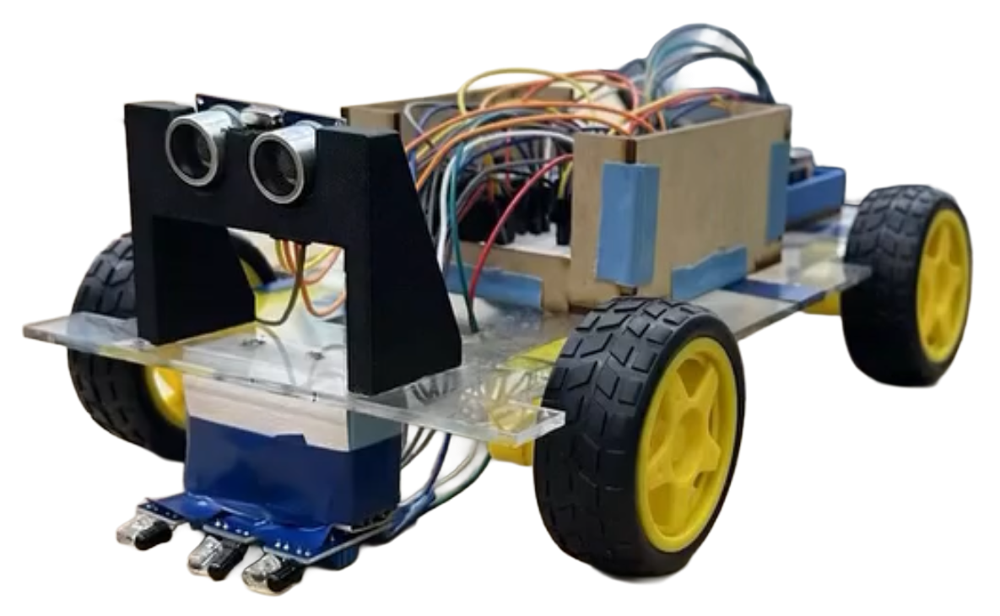

Robotics & Controls
Line-Following Car
Collaborated in a 4-person team to design and build an autonomous line-following car weighing ~1 kg. The project focused on integrating sensor logic with mechanical stability. The housing the built out of arcylic and wood.
Arduino Uno
IR Sensor
Ultrasonic Sensor
Onshape
DC Motor
Lead Mechanical Designer
Jan - May 2025

Iteration & Problem Solving
Initial prototypes experienced wheel slippage, which was resolved by adding rubber bands to increase friction and upgrading the power supply with additional batteries. These improvements led to smoother turning and more consistent line tracking.